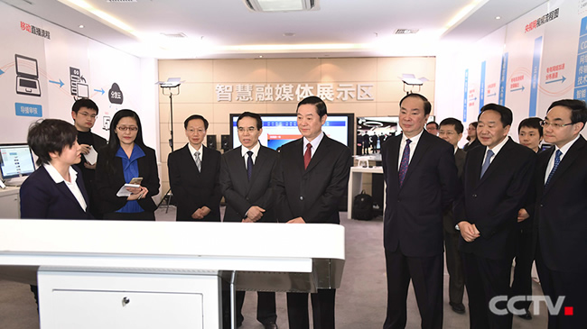

刘奇葆考察调研央视媒体融合发展情况
2017-02-19
来源：中央电视台官网
2月19日，中共中央政治局委员、中央书记处书记、中宣部部长刘奇葆到中央电视台调研媒体融合发展情况，强调要深入学习贯彻习近平总书记系列重要讲话精神和治国理政新理念新思想新战略，全力推动媒体深度融合取得突破性进展，不断深化新闻单位融合传播创新，着力打造一批形态多样、手段先进、竞争力强的新型主 流媒体，进一步提高新闻舆论传播力引导力影响力公信力。
调研期间，刘奇葆考察了中央电视台融媒体分发监控中心、智慧融媒体实验室和央视新闻移动直播机房，观看了融媒体传播和移动直播效果展示，并出席央视新闻移动网上线启动仪式。
刘奇葆指出，媒体融合已进入向纵深推进的关键阶段。中央电视台和各新闻单位认真贯彻落实中央要求，整合媒体资源力量，深化内部机制改革，重构采 编发网络，再造采编发流程，努力推进媒体深度融合，全媒体报道出新出彩，呈现出新气象新面貌。要顺应移动互联时代传播形态变革，遵循新媒体发展规律和融合 传播规律，在思想认识上再提高、资源配置上再优化、创新措施上再落实，推动传统媒体和新兴媒体尽快从相“加”阶段迈向相“融”阶段，实现融为一体、合而为 一。
刘奇葆强调，推进媒体深度融合，广播电视是十分重要的领域。要进一步增强紧迫感使命感，发挥自身优势，把握信息传播移动化、视频化趋势，坚持移 动优先战略，聚焦音频视频发力，利用广播电视网、电信网、互联网等信息网络，推动内容、技术、平台、人才、管理等要素共享融通，实现广播电视传播和网络新 媒体传播此长彼长，进一步提升广播电视媒体的实力和影响力。中央电视台作为国家电视媒体，推进媒体深度融合有自己的优势，形成了自己的特色。要以建设央视 新闻移动网为契机，进一步整合台网资源，改造采编播发流程，创新管理运行体制机制，培养高素质全媒人才队伍，打造自主可控传播平台，加快构建大屏小屏交互 联动、台网端微融合发展的传播样态，巩固和拓展内容优势、平台优势、传播优势，率先建成全媒体传播的新型主流媒体。